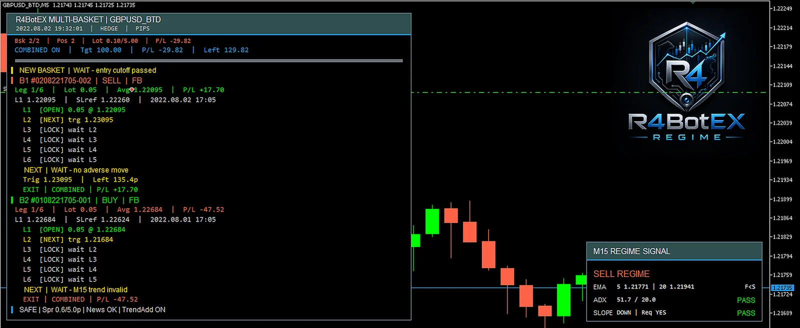
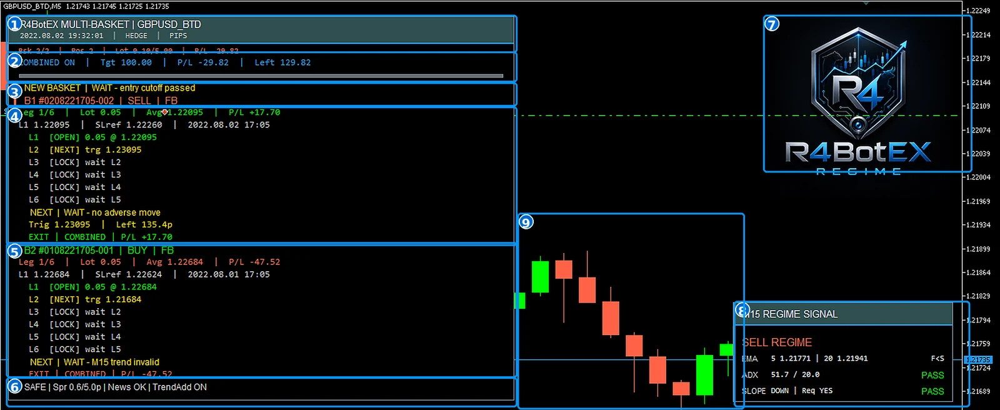
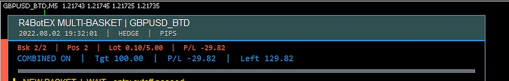
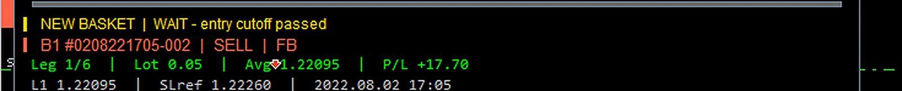
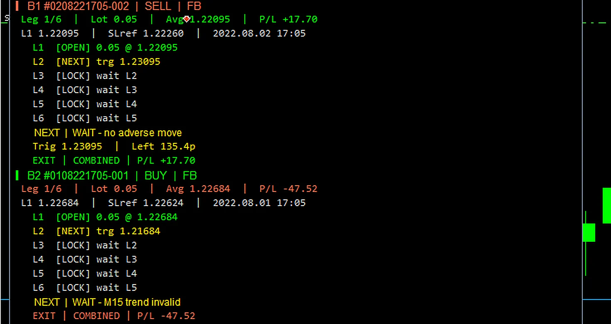
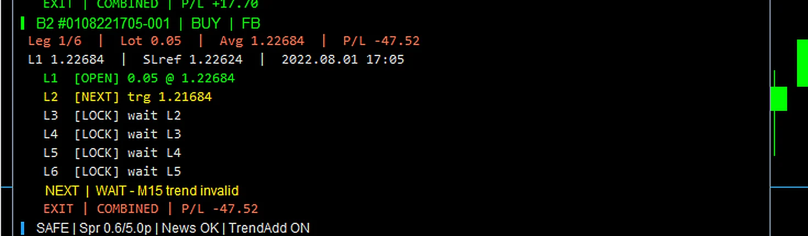
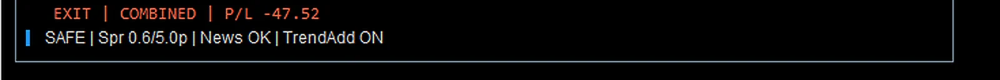
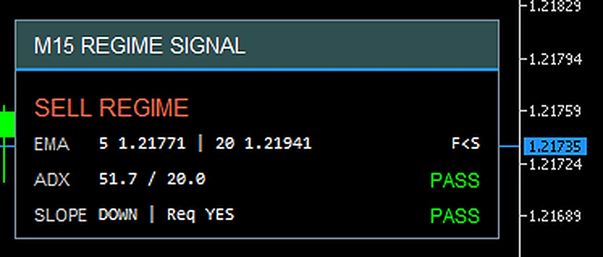
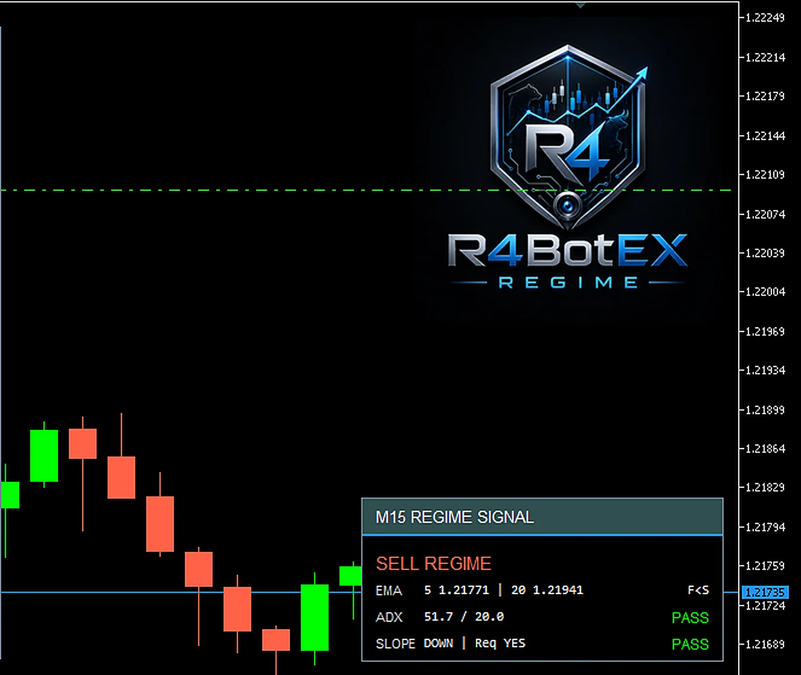

Memahami Cara Kerja R4BotEX REGIME dari Signal sampai Exit
R4BotEX REGIME dirancang sebagai sistem trading otomatis berbasis Market Regime + Pullback Recovery. EA tidak membuka posisi hanya karena satu indikator memberi sinyal. Keputusan dibentuk melalui beberapa lapisan: Context TF membaca arah dan kekuatan trend, Signal TF mencari timing pullback/recovery, lalu Entry Gate memeriksa apakah kondisi trading layak untuk dieksekusi.
1. Dua Timeframe dengan Tugas yang Berbeda
Pada setting default, Context TF menggunakan M15 dan Signal TF menggunakan M5. Context TF menjadi tempat EMA dan ADX membaca regime. Signal TF menjadi tempat RSI, ATR, candle trigger, signal bar, dan swing lookback bekerja.
| Bagian | Default | Fungsi |
|---|---|---|
| Context TF | M15 | Membaca EMA cepat/lambat, ADX, dan slope EMA. |
| Signal TF | M5 | Membaca RSI recovery, ATR, candle trigger, dan timing evaluasi entry. |
2. Peran EMA, ADX, RSI, dan ATR
EMA - menentukan arah regime
EMA adalah moving average yang memberi bobot lebih besar pada harga terbaru. Di dalam EA, EMA tidak hanya menjadi garis visual. Regime BUY membutuhkan EMA cepat berada di atas EMA lambat, sedangkan Regime SELL membutuhkan EMA cepat berada di bawah EMA lambat. Jika slope diwajibkan, EMA cepat juga harus bergerak sesuai arah trend.
ADX - menyaring kekuatan trend
ADX tidak menentukan arah. Arah tetap berasal dari EMA. ADX hanya memeriksa apakah trend cukup kuat untuk dipakai oleh primary signal. Dengan minimum default 20, ADX yang berada di bawah 20 membuat Context Regime belum valid untuk primary entry.
RSI - pullback lalu recovery
R4BotEX REGIME tidak memakai RSI dengan logika klasik 70/30 sebagai trigger utama. Default-nya menggunakan area 50: untuk BUY, RSI sebelumnya berada di atau di bawah 50 lalu RSI terbaru pulih di atas 50. Untuk SELL, mekanismenya dibalik.
ATR - mengukur volatilitas dan jarak
ATR tidak memiliki arah BUY/SELL. ATR mengukur lebar pergerakan harga. Nilainya dipakai untuk membatasi jarak pullback, menjadi salah satu acuan pembentukan stop awal, mengatur averaging mode ATR, dan menentukan jarak trailing.
3. Kapan EA Membuka BUY dan SELL?
Evaluasi entry dilakukan pada bar baru Signal TF. Data indikator menggunakan candle yang sudah selesai, sehingga EA tidak mengevaluasi primary entry dengan candle pemicu yang masih berjalan.
Primary BUY
- EMA cepat Context berada di atas EMA lambat.
- ADX Context mencapai minimum yang ditentukan.
- Slope EMA cepat naik jika slope diwajibkan.
- RSI Signal menunjukkan pullback lalu recovery BUY.
- Candle Signal berada cukup dekat dengan EMA Cepat Context sesuai batas ATR.
- Candle harus bullish jika warna candle diwajibkan.
- BUY diizinkan dan seluruh entry gate, stop, lot, margin, serta broker execution lolos.
Primary SELL
- EMA cepat Context berada di bawah EMA lambat.
- ADX Context mencapai minimum.
- Slope EMA cepat turun jika slope diwajibkan.
- RSI Signal melakukan pullback ke atas lalu recovery ke bawah.
- Candle Signal tetap berada di area pullback yang diizinkan ATR.
- Candle harus bearish jika warna candle diwajibkan.
- SELL diizinkan dan seluruh safety serta execution gate lolos.
SELL: EMA bearish + ADX cukup + RSI recovery SELL + candle valid + safety gate lolos
4. Mengapa Signal Valid Belum Tentu Menjadi Order?
R4BotEX REGIME memiliki gatekeeper di luar indikator. Karena itu, kondisi EMA/ADX/RSI/ATR yang terlihat sempurna masih dapat menghasilkan status WAIT atau BLOCK jika kondisi eksekusi belum sesuai.
| Filter | Yang diperiksa |
|---|---|
| Hari & Session | Hari trading aktif, masih berada pada session atau fallback window, dan belum melewati entry cutoff. |
| Trade Environment | Koneksi terminal, Algo Trading, izin account dan EA. |
| Spread | Spread aktual tidak melewati batas maksimum. |
| News | Jika filter news aktif, entry tidak berada di dalam window berita yang diblokir. |
| Basket Capacity | Slot basket masih tersedia sesuai mode single/multi-basket. |
| Stop / Lot / Margin | Stop valid, sizing valid, cost-to-stop valid, dan free margin cukup. |
5. Controlled Averaging L1-L6
L1 adalah entry awal sebuah basket. L2-L6 adalah posisi tambahan yang hanya dapat dipertimbangkan ketika harga bergerak adverse dari L1 dan syarat add terpenuhi. Trigger setiap leg dihitung dari harga L1, bukan dari leg sebelumnya atau Basket AVG.
Mode ATR membuat jarak mengikuti volatilitas, sedangkan mode PIPS menggunakan jarak fixed. Default ATR distance adalah 0.40 / 0.70 / 1.10 / 1.50 / 2.00 ATR dari L1 untuk L2 sampai L6.
Averaging juga dapat diwajibkan tetap mengikuti trend thesis Context TF, dibatasi jeda minimal bar, dicegah setelah partial profit, diblokir ketika spread/news tidak aman, serta tunduk pada batas total lot.
6. Money Management dan Sizing
R4BotEX REGIME menyediakan dua pendekatan sizing: Risk Percent dan Fixed Lot. Dalam mode risk-percent, reference stop dipakai sebagai acuan menghitung lot dan budget sizing dibagi ke porsi L1-L6. Dalam mode fixed, lot L1 menjadi dasar dan leg berikutnya mengikuti multiplier yang dikonfigurasi.
Batas maksimum total lot berfungsi sebagai pembatas exposure tambahan. Risk Percent adalah basis kalkulasi sizing, bukan jaminan bahwa kerugian aktual selalu berhenti tepat pada angka tersebut.
7. Partial Profit, Final TP, dan Trailing Stop
Mekanisme exit berbasis R digunakan pada mode SL Managed. Satuan 1R berasal dari jarak antara harga L1 dan Initial SL/reference SL basket.
Dengan konfigurasi default, trailing mulai pada 0.90R, partial profit dipicu pada 1.00R, 60% volume dicoba direalisasikan, dan sisa posisi mengejar Final TP 1.50R. Jarak trailing menggunakan 0.80 ATR dengan break-even buffer 0.2 pip.
| Parameter Default | Fungsi |
|---|---|
| Trailing Start 0.90R | Trailing mulai sedikit sebelum partial. |
| Partial 1.00R | Trigger realisasi sebagian profit. |
| Partial Close 60% | Porsi volume yang dicoba ditutup. |
| Final TP 1.50R | Menutup sisa basket jika target akhir tercapai. |
| Trailing 0.80 ATR | Jarak stop mengikuti volatilitas Signal TF. |
| BE Buffer 0.2 pip | Memberi lantai perlindungan sedikit melewati Basket AVG. |
Setelah averaging, ukuran 1R tetap berasal dari L1 ke Initial SL, tetapi trigger favorable move dihitung dari Basket AVG. Karena itu, level partial, final, dan trailing dapat bergeser ketika harga rata-rata basket berubah.
8. Mode SL Managed vs No-SL Profit Hold
Mode SL Managed menggunakan broker/reference SL dan dapat memanfaatkan partial profit, final target R, trailing, daily-loss protection, serta force close sesuai konfigurasi.
Karena itu, mode No-SL sebaiknya dijelaskan sebagai opsi lanjutan dengan profil risiko berbeda, bukan sebagai fitur "lebih aman".
9. Fallback dan Multi-Basket
Jika fitur minimum satu trade per hari diaktifkan, belum ada trade pada hari tersebut, dan waktu sudah masuk fallback window, EA dapat menggunakan entry fallback. Fallback merupakan jalur berbeda dari primary signal.
Pada mode multi-basket, batas komersial adalah maksimal dua basket dan mode ini membutuhkan account hedging. Basket berikutnya dapat dipaksa berlawanan dengan basket aktif terbaru. Karena itu, arah Basket 2 tidak selalu sama dengan Context Regime yang sedang terlihat pada panel.
10. Cara Membaca Dashboard dengan Cepat
Dashboard adalah panel diagnosis. Untuk membaca kondisi EA secara cepat, gunakan urutan berikut:
- Bsk / Pos / Lot / P/L - lihat exposure dan floating total.
- COMBINED / INDIVIDUAL / SL-R EXIT - pahami mode target yang aktif.
- NEW BASKET - apakah L1 basket baru masih boleh dibuat?
- B1 / B2 & Leg Map - lihat arah, asal signal, leg, Avg, dan P/L basket.
- NEXT - lihat alasan leg averaging berikutnya belum masuk.
- SAFE - lihat spread, news, dan trend-add.
- REGIME SIGNAL - lihat Context TF sedang BUY, SELL, atau belum valid.
Status utama yang perlu dipahami: READY / PASS WAIT BLOCK
11. Cara Setting Parameter EA
Input R4BotEX REGIME dibagi ke dalam beberapa kelompok agar pengguna dapat melakukan setting secara bertahap. Cara yang paling aman untuk memahami efek setting adalah menentukan mode utama terlebih dahulu, lalu mengubah satu kelompok parameter pada satu waktu dan mengujinya.
11.1. Quick Start Sebelum Mengubah Parameter
- Pasang EA pada chart simbol yang akan digunakan dan aktifkan Algo Trading.
- Masukkan serial pada parameter Lisensi akun.
- Untuk penggunaan awal, gunakan 1 basket dan mode SL Managed.
- Cocokkan jam strategi dengan waktu server broker menggunakan Offset waktu strategi.
- Pilih satu metode lot: Risk Percent atau Fixed Lot.
- Jika averaging aktif, pastikan jarak L2-L6 meningkat dan maksimum leg sesuai toleransi risiko.
11.2. Lisensi dan Pengaturan Umum
Parameter Lisensi akun harus diisi dengan serial yang sesuai nomor login MT5. Setelah itu tentukan simbol, Magic Number, arah BUY/SELL yang diizinkan, maksimum leg, dan mode single/multi-basket.
| Parameter | Cara Setting |
|---|---|
| Simbol trading; kosong = chart | Kosongkan bila EA mengikuti simbol chart. Isi manual hanya bila diperlukan dan nama simbol harus sama dengan broker. |
| ID unik EA | Gunakan Magic Number berbeda untuk setiap instance agar posisi tidak tercampur. |
| Izinkan posisi BUY / SELL | true = arah boleh dibuka; false = arah tersebut dinonaktifkan. |
| Maksimum leg L1-L6 | Contoh 3 berarti basket maksimal L1, L2, dan L3. Nilai lebih kecil lebih mudah dipelajari saat forward test awal. |
| true=1 basket, false=2 basket | true untuk single-basket. false untuk multi-basket dan membutuhkan akun HEDGING. |
11.3. Waktu dan Sesi Intraday
Semua sesi, fallback, entry cutoff, dan force close memakai jam strategi. Jam strategi adalah waktu server broker ditambah Offset waktu strategi.
Contoh: server broker 14:00 dan Anda ingin strategi membaca 19:00, gunakan offset +5. Default Sesi 1 adalah 14:00-18:00, Sesi 2 19:00-22:30, batas entry baru 22:30, dan force close mode SL 23:45.
11.4. Model Signal
Baseline default memakai Context M15 dan Signal M5. EMA 20/50 membaca regime, ADX 14 minimum 20 menyaring kekuatan trend, RSI 14 memakai pullback/recovery di sekitar 50, ATR 14 mengukur volatilitas, dan jarak pullback default dibatasi 0.60 ATR.
| Parameter | Default | Efek Umum |
|---|---|---|
| TF arah tren utama | M15 | Timeframe lebih besar cenderung membuat regime lebih lambat dan lebih stabil. |
| TF pemicu entry | M5 | Timeframe lebih kecil mengevaluasi lebih sering tetapi membawa lebih banyak noise. |
| EMA cepat / lambat | 20 / 50 | Mengubah sensitivitas pembacaan arah trend. |
| Minimum kekuatan tren | 20 | Nilai lebih tinggi membuat primary entry lebih selektif. |
| RSI pullback / recovery | 50 / 50 | Mengatur kapan pullback dan recovery dianggap valid. |
| Maks jarak pullback | 0.60 ATR | Nilai kecil lebih ketat terhadap area EMA; nilai besar lebih longgar. |
| Wajib warna candle / slope EMA | true / true | Membuat validasi trigger dan arah regime lebih ketat. |
11.5. Stop, Target, Partial, dan Trailing
Tentukan dahulu apakah sistem menggunakan SL Managed atau No-SL Profit Hold. Partial, Final TP berbasis R, trailing, daily loss protection, dan force close adalah jalur utama pada mode SL Managed.
| Parameter | Default | Makna |
|---|---|---|
| true = tanpa broker SL | false | false = SL Managed. true = No-SL dan membutuhkan konfirmasi risiko. |
| Bar acuan swing SL | 6 | Jumlah bar Signal TF untuk mencari swing high/low. |
| Jarak SL awal | 1.00 ATR | Salah satu acuan pembentukan stop awal. |
| Minimum / Maksimum SL | 5 / 35 pip | Setup ditolak jika stop terlalu dekat atau terlalu jauh. |
| Partial Profit | 1.00R / 60% | Pada sekitar +1R, EA mencoba merealisasikan 60% volume. |
| Final TP | 1.50R | Target akhir sisa basket. |
| Trailing | 0.90R / 0.80 ATR | Mulai pada 0.90R dengan jarak dinamis 0.80 ATR. |
11.6. Controlled Averaging L1-L6
Pilih ATR untuk jarak dinamis atau PIPS untuk jarak tetap. Semua trigger L2-L6 dihitung dari L1, bukan dari leg sebelumnya.
| Leg | ATR Default dari L1 | PIPS Default dari L1 |
|---|---|---|
| L2 | 0.40 ATR | 20 pip |
| L3 | 0.70 ATR | 30 pip |
| L4 | 1.10 ATR | 40 pip |
| L5 | 1.50 ATR | 50 pip |
| L6 | 2.00 ATR | 60 pip |
Jarak sebaiknya selalu meningkat. Tren harus valid untuk add menjaga agar thesis Context TF masih searah sebelum averaging baru. Stop add setelah partial TP mencegah penambahan leg setelah profit parsial sudah terjadi.
11.7. Money Management
Pilih satu mode lot. Pada LOT_RISK_PERCENT, default risk sizing adalah 0.50% dengan porsi L1-L6 0.35 / 0.20 / 0.15 / 0.12 / 0.10 / 0.08. Pada LOT_FIXED, lot L2-L6 berasal dari Lot dasar L1 dikali multiplier masing-masing.
Parameter Maks total lot terbuka membatasi exposure agregat. Risk sizing adalah basis kalkulasi lot, bukan hard loss cap, khususnya pada mode No-SL.
11.8. Filter Biaya dan Keselamatan
Default Maksimum spread adalah 1.50 pip dan Maks spread vs jarak SL 20%. Karena itu, setup dapat ditolak walaupun spread masih di bawah 1.50 pip jika biaya spread terlalu besar dibanding reference stop.
11.9. Fallback dan Minimum Trade
Jika Paksa min 1 trade per hari aktif, fallback baru dipertimbangkan ketika belum ada entry deal hari itu, waktu fallback sudah mulai, dan entry cutoff belum lewat. Default fallback mulai 21:30 dengan bias FALLBACK_EMA_TREND dan pengali lot/risk 0.50.
11.10. Filter News
Jika filter news aktif, EA memakai kalender ekonomi native MT5 pada live trading. Contoh untuk GBPUSD adalah high-impact GBP dan USD dengan blok 15 menit sebelum dan 15 menit sesudah event.
11.11. Dashboard, Context Panel, Tema Chart, dan Logo
Kelompok ini memengaruhi keterbacaan chart, bukan signal. Anda dapat mengatur posisi dashboard, ukuran font, warna, context regime card, tema chart, grid, dan logo. Setting tampilan yang sederhana adalah dashboard=true, auto-fit=true, font 9, panel regime=true, tema chart=true, grid=false.
11.12. Contoh Setting untuk Belajar / Forward Test
| Parameter | Contoh | Tujuan |
|---|---|---|
| Mode basket | 1 basket | Menyederhanakan observasi. |
| Mode SL | SL Managed | Memakai proteksi berbasis SL/R. |
| Maksimum leg | 3 | Membatasi kompleksitas averaging. |
| Mode averaging | ATR | Mengamati jarak dinamis volatilitas. |
| Mode lot | LOT_FIXED | Membuat perhitungan lot mudah dipahami. |
| Lot dasar L1 | 0.01 | Ukuran kecil untuk observasi. |
| Maks total lot | 0.03 | Membatasi exposure contoh L1-L3. |
| Fallback | false | Menguji primary signal tanpa forced entry. |
11.13. Hubungan Parameter yang Wajib Dipahami
- No-SL=true membutuhkan konfirmasi risiko=true.
- Multi-basket memerlukan akun HEDGING.
- Target gabungan relevan pada No-SL + multi-basket + combined + minimal dua basket aktif.
- Total porsi risiko L1-L6 pada mode risk-percent harus ≤ 1.0.
- Fixed Lot memakai Lot dasar L1 × multiplier masing-masing leg.
- ATR/PIPS hanya satu mode yang aktif dan trigger selalu dari L1.
- Fallback hanya tersedia setelah waktu fallback dan sebelum entry cutoff.
11.14. Checklist Sebelum Menyimpan File .set
- Lisensi valid dan EA start tanpa error.
- Simbol dan Magic Number benar.
- Jam strategi cocok dengan server broker.
- Session, fallback, cutoff, dan force close tidak salah urut.
- Mode SL/No-SL dipilih dengan sengaja.
- Jarak averaging meningkat dan maksimum leg sesuai toleransi akun.
- Mode lot benar dan maksimum total lot sudah dibatasi.
- Spread/cost-to-stop sesuai karakter broker.
- News filter diuji di forward environment jika dipakai.
- Restart MT5/EA diuji saat basket aktif.
12. Panduan Tampilan EA pada Chart & Dashboard
Tampilan R4BotEX REGIME dirancang sebagai panel diagnosis. Tujuannya bukan hanya memperlihatkan posisi yang sedang terbuka, tetapi juga menjawab tiga pertanyaan penting: apa yang sedang aktif, apa yang sedang ditunggu, dan apa yang sedang memblokir aksi berikutnya.

12.1. Cara Membaca Dashboard dalam 30 Detik
Anda tidak perlu membaca semua baris sekaligus. Gunakan urutan diagnosis berikut setiap kali membuka chart:
12.2. Peta 9 Area Utama pada Chart

Nama engine, simbol, waktu strategi, tipe akun/engine, dan mode jarak averaging.
Jumlah basket, posisi, total lot, floating P/L, target aktif, dan sisa menuju target.
Menjawab apakah EA saat ini boleh membuka L1 untuk basket baru.
Identitas B1, arah, asal signal, leg, averaging, P/L, dan exit basket.
Informasi basket kedua ketika mode multi-basket digunakan.
Ringkasan spread, news, dan apakah trend-add diwajibkan.
Branding visual. Logo tidak mengubah signal atau keputusan trading.
Diagnosis EMA, ADX, dan slope pada Context TF.
Pergerakan harga dan konteks visual market.
12.3. Header Dashboard, Exposure, dan Target

| Tampilan | Arti Mudah |
|---|---|
| Bsk 2/2 | Ada 2 basket aktif dari batas maksimum 2 basket. |
| Pos 2 | Ada 2 posisi terbuka milik EA pada simbol tersebut. |
| Lot 0.10/5.00 | Total lot terbuka 0.10 dari batas maksimum 5.00. |
| P/L -29.82 | Floating profit/loss total semua basket aktif. |
| COMBINED ON | Keputusan close mengikuti total P/L gabungan basket aktif. |
| Tgt 100.00 | Target profit gabungan yang sedang ditunggu. |
| Left 129.82 | Sisa perbaikan P/L yang dibutuhkan untuk mencapai target. |
Contoh: target +100.00 dan floating -29.82 menghasilkan Left 129.82. Basket yang sedang profit belum tentu langsung ditutup jika COMBINED ON, karena keputusan exit mengikuti hasil gabungan semua basket.
12.4. NEW BASKET: Apakah L1 Baru Boleh Dibuka?

| Status NEW BASKET | Makna |
|---|---|
| WAIT - entry cutoff passed | Batas waktu pembukaan basket baru sudah lewat. |
| WAIT - outside session/fallback | Saat ini berada di luar session normal dan fallback window. |
| WAIT - weekday off | Trading pada hari tersebut dinonaktifkan. |
| WAIT - news | News filter sedang menahan entry baru. |
| BLOCK - max baskets 2/2 | Kapasitas basket sudah penuh. |
| BLOCK - trade environment | Koneksi, Algo Trading, account, atau environment belum memenuhi syarat. |
| READY - BUY/SELL signal | Primary signal sudah lengkap dan siap menuju eksekusi L1. |
| READY - fallback BUY/SELL | Fallback memenuhi syarat untuk basket baru. |
12.5. Membaca Identitas Basket, Leg, Lot, Avg, dan P/L

| Field | Arti |
|---|---|
| B1 / B2 | Nomor basket pada dashboard. |
| Basket ID | ID unik basket. Format utama DDMMYYHHMM-SEQ. |
| BUY / SELL | Arah basket. Semua leg di dalam basket mengikuti arah ini. |
| PRI | L1 berasal dari primary signal. |
| FB | L1 berasal dari fallback signal. |
| Leg 1/6 | Basket memiliki 1 leg aktif dari maksimum 6. |
| Lot | Total volume yang masih terbuka pada basket tersebut. |
| Avg | Weighted average entry price seluruh leg dalam basket. |
| P/L | Floating profit/loss basket itu saja, bukan total seluruh EA. |
L1 adalah harga referensi posisi pertama basket. SLref adalah reference stop internal/original yang digunakan oleh logic risk/R dan validasi tertentu. Pada mode tanpa broker SL, SLref masih dapat tetap ada sebagai referensi internal.
12.6. Status L1-L6 dan Baris NEXT

| Status Leg | Makna |
|---|---|
| [OPEN] | Leg sudah terbuka dan posisinya terdeteksi. |
| [NEXT] | Leg berikutnya yang akan dievaluasi. |
| [LOCK] wait L2 | Belum boleh dievaluasi karena leg sebelumnya belum terbuka. |
| [DISABLED] | Leg berada di atas maksimum leg yang diizinkan. |
| [STATE UNAVAILABLE] | EA belum dapat memastikan state leg dari data yang tersedia. |
| Status NEXT | Penjelasan |
|---|---|
| WAIT - no adverse move | Harga belum bergerak melawan L1 sesuai arah yang dibutuhkan. |
| WAIT - distance ... left | Harga adverse sudah bergerak, tetapi trigger leg berikutnya belum tercapai. |
| WAIT - M15 trend invalid | Context trend tidak mendukung arah basket ketika trend validation untuk add diwajibkan. |
| WAIT - spacing ... bars | Belum cukup jumlah Signal TF bar sejak averaging terakhir. |
| WAIT - news | News filter sedang memblokir averaging. |
| WAIT - ATR unavailable | Data ATR yang dibutuhkan belum siap. |
| BLOCK - FB averaging off | Basket berasal dari fallback tetapi averaging fallback tidak diizinkan. |
| BLOCK - SL tightened | Stop sudah diperketat sehingga add baru diblokir. |
| BLOCK - max lots | Total lot telah mencapai batas. |
| READY - add conditions met | Jarak dan seluruh konfirmasi averaging telah terpenuhi. |
Jika dashboard menampilkan Trig, itu adalah harga trigger leg berikutnya. Left pada baris NEXT menunjukkan sisa jarak menuju trigger dalam pip.
12.7. Membaca EXIT dan SAFE
Baris EXIT menunjukkan metode exit yang sedang berlaku pada basket: COMBINED, individual target, atau SL/R EXIT. Setelah itu, gunakan baris SAFE untuk melihat filter besar secara cepat.

| Bagian SAFE | Arti |
|---|---|
| Spr 0.6/5.0p | Spread aktual 0.6 pip dibanding batas maksimum 5.0 pip. |
| News OK | Tidak ada blokir news aktif saat dashboard diperbarui. |
| TrendAdd ON | Averaging diwajibkan tetap searah thesis Context TF. |
12.8. Membaca Panel REGIME SIGNAL

Panel REGIME SIGNAL hanya menjelaskan Context TF. BUY REGIME atau SELL REGIME bukan jaminan bahwa L1 langsung dibuka. Primary entry masih memerlukan RSI recovery, pullback distance, candle trigger, session, spread, news, dan safety gate.
| Tampilan | Arti |
|---|---|
| BUY REGIME | Fast EMA > Slow EMA dan filter ADX/slope yang diwajibkan lolos. |
| SELL REGIME | Fast EMA < Slow EMA dan filter ADX/slope yang diwajibkan lolos. |
| NO VALID REGIME | Salah satu syarat EMA, ADX, atau slope tidak terpenuhi. |
| DATA WAIT | Data indikator belum siap. |
| F>S / F<S | Fast EMA lebih besar / lebih kecil daripada Slow EMA. |
| Req YES | Filter slope diwajibkan oleh parameter. |
| PASS | Syarat tersebut lolos. |
12.9. Candlestick, Harga, Garis, dan Logo

Logo hanya elemen branding dan tidak memengaruhi signal. Garis horizontal pada chart juga tidak boleh langsung dianggap sebagai TP atau SL hanya berdasarkan warna. Selalu periksa label atau sumber object tersebut.
12.10. Arti Warna Dashboard
| Warna pada Tema Contoh | Biasanya Dipakai untuk |
|---|---|
| Hijau | PASS, OPEN, profit positif, dan status aman. |
| Kuning | WAIT, NEXT, atau trigger yang sedang ditunggu. |
| Merah / Tomato | SELL, floating loss, atau status BLOCK/peringatan tertentu. |
| Biru | Informasi target, combined mode, atau aksen sistem. |
| Putih / Silver | Data netral seperti harga, waktu, dan label pendukung. |
12.11. Contoh Diagnosis dari Atas ke Bawah
- Bsk 2/2, Pos 2, Lot 0.10/5.00, P/L -29.82 → dua basket aktif dan total floating negatif.
- COMBINED ON, Tgt 100, Left 129.82 → exit gabungan aktif dan total masih perlu membaik.
- NEW BASKET WAIT - entry cutoff passed → basket baru tidak dibuat karena cutoff sudah lewat.
- B1 SELL FB, P/L +17.70 → Basket 1 SELL berasal dari fallback dan sedang profit.
- B1 NEXT WAIT - no adverse move → L2 belum masuk karena belum ada adverse move.
- B2 BUY FB, P/L -47.52 → Basket 2 BUY berasal dari fallback dan sedang floating loss.
- B2 NEXT WAIT - M15 trend invalid → averaging B2 ditahan karena Context trend tidak valid.
- SAFE → spread/news aman, tetapi TrendAdd tetap menjadi syarat.
- M15 SELL REGIME → Context TF sedang mendukung arah SELL.
12.12. Kamus Singkatan Dashboard
| Singkatan | Arti |
|---|---|
| Bsk | Basket aktif |
| Pos | Jumlah posisi terbuka milik EA |
| Lot | Volume posisi |
| P/L | Floating profit/loss |
| Tgt | Target profit |
| Left | Sisa menuju target atau trigger |
| FB / PRI | Fallback / Primary |
| Avg | Weighted average entry price |
| SLref | Reference stop loss internal/original |
| Trig / trg | Trigger price |
| Spr | Spread |
| TrendAdd | Konfirmasi Context trend diwajibkan untuk averaging |
| PASS / WAIT / BLOCK | Lolos / menunggu / diblokir rule tertentu |
| OPEN / NEXT / LOCK | Leg terbuka / leg berikutnya / leg belum boleh dievaluasi |
12.13. Skenario yang Sering Membingungkan
| Pertanyaan | Jawaban Singkat |
|---|---|
| Mengapa SELL REGIME tetapi tidak ada SELL baru? | REGIME hanya Context TF. Entry masih membutuhkan Signal TF dan seluruh gate eksekusi. |
| Mengapa [NEXT] muncul tetapi L2 tidak open? | [NEXT] hanya urutan leg. Baca baris NEXT untuk alasan sebenarnya. |
| Mengapa B1 profit tetapi belum ditutup? | Jika COMBINED ON, keputusan exit mengikuti total gabungan. |
| Mengapa NEW BASKET WAIT tetapi P/L basket tetap berubah? | WAIT hanya menahan basket baru; posisi aktif tetap berjalan dan dikelola. |
| Mengapa B2 BUY saat panel menunjukkan SELL REGIME? | Pada multi-basket arah basket kedua dapat berlawanan, dan basket juga dapat berasal dari fallback. |
| Mengapa warna berbeda dari panduan? | Warna dapat dikustomisasi. Selalu ikuti teks status. |
12.14. Checklist Cepat Saat Memantau EA
- Berapa Bsk aktif dan berapa Pos terbuka?
- Total P/L sedang positif atau negatif?
- Mode exit COMBINED, INDIVIDUAL, atau SL/R?
- NEW BASKET menunjukkan READY, WAIT, atau BLOCK?
- B1/B2 berasal dari PRI atau FB?
- Leg mana yang OPEN dan mana yang NEXT?
- Apa alasan pada baris NEXT?
- Spread dan News pada SAFE masih aman?
- TrendAdd ON atau OFF?
- REGIME SIGNAL menunjukkan BUY, SELL, NO VALID REGIME, atau DATA WAIT?
13. Sebelum Digunakan pada Akun Live
Dokumen parameter R4BotEX menyarankan proses pengujian bertahap: Strategy Tester → forward test demo → forward test akun kecil → baru mempertimbangkan penggunaan live yang lebih besar. Untuk penggunaan awal, konfigurasi single-basket, SL Managed, dan parameter signal default merupakan baseline yang lebih mudah dipahami sebelum optimasi.
Ubah satu kelompok parameter pada satu waktu. Jika EMA, ADX, RSI, ATR, session, averaging, dan money management diubah sekaligus, akan sulit mengetahui perubahan mana yang sebenarnya memengaruhi hasil.